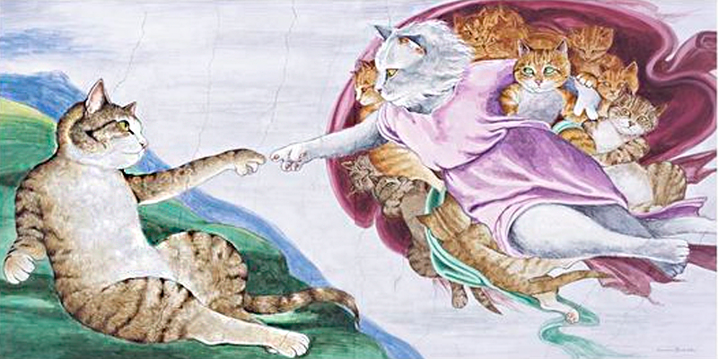

A ONG de ResGatar foi fundada com o objetivo de proteger e cuidar dos gatos abandonados na nossa comunidade. Somos uma equipe dedicada de voluntários apaixonados por gatos, trabalhando juntos para garantir que cada gato tenha um lar amoroso e seguro.
Desde o nosso início, temos sido dedicados a fornecer assistência aos gatos abandonados nas ruas, incluindo cuidados médicos, alimentação adequada e um ambiente seguro para eles. Além disso, trabalhamos para encontrar lares amorosos para esses animais, através de nossos programas de adoção.
Acreditamos que todos os gatos merecem uma vida plena e amorosa, e estamos comprometidos em fazer nossa parte para tornar esse sonho uma realidade. Nossos voluntários são altamente treinados e dedicados a cuidar dos gatos em nossa instituição, e acompanhamos de perto o processo de adoção para garantir que cada gato vá para um lar seguro e amoroso.

Se você é um amante de gatos e quer fazer a diferença na vida desses animais, junte-se a nós! Seja um voluntário, adote um gato ou doe para ajudar a sustentar nossa missão. Juntos, podemos fazer a diferença na vida dos gatos em nossa comunidade.